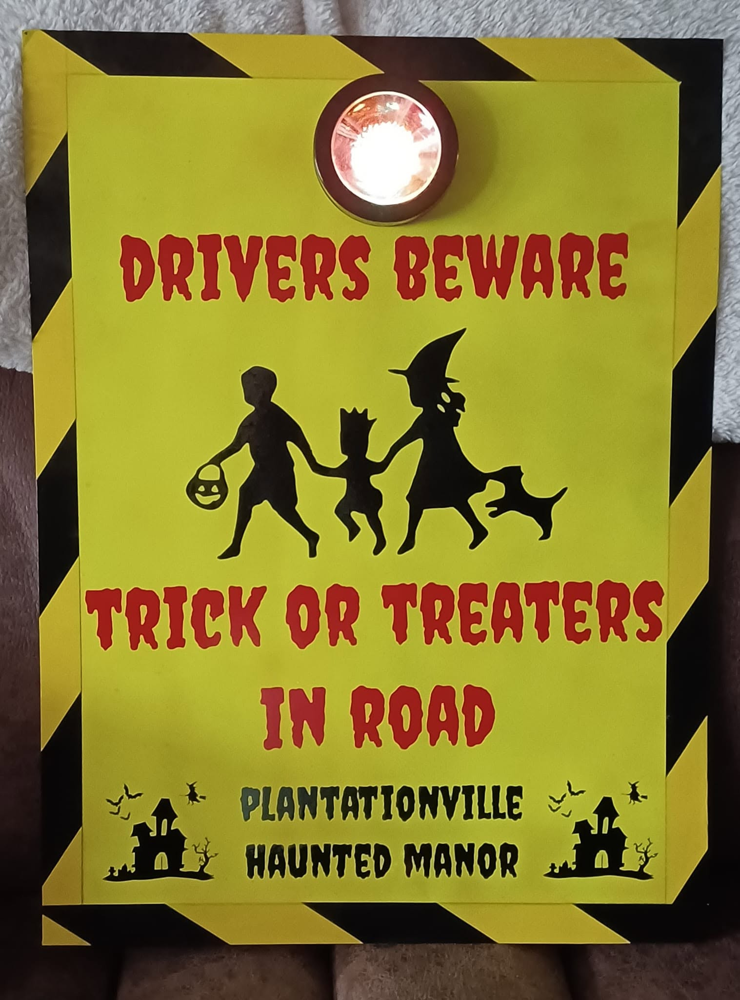
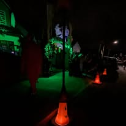
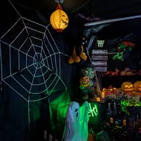

Plan Your
Visit
Everything you need for one night only: 31 October, from 4:30pm, at 49 Plantation Road in Hextable.
31 October 2026
Route To PlantationVille
Enter your postcode or starting point and we will open directions to 49 Plantation Road, Hextable, Kent, BR8 7SA.
Parking is very limited, so please walk if possible.
Please Take Care On The Road

Halloween night gets busy around PlantationVille. We put illuminated warning signs along the surrounding road to draw drivers' attention to the number of trick-or-treaters about.
We also place cones immediately outside the Manor to discourage parking directly in front and leave more room for children and families arriving, leaving and enjoying the display.

Baby Boo
Not every little monster wants the bigger scares. Baby Boo gives younger visitors their own colourful corner of PlantationVille to enjoy at their own pace.
DISCOVER BABY BOO

What To Expect
PlantationVille is a home Halloween attraction rather than a commercial theme park. Expect a busy residential street, a decorated house and front garden, lighting, sound, props, characters and plenty to look at. Please allow other visitors space and follow any directions from the Boo Crew on the night.
Is PlantationVille free?
Yes. Entry is free.
What time does it open and close?
It opens at 4:30pm. It normally finishes at around 8:30pm, depending on when the crowds stop coming.
Where should I park?
Parking is very limited. Please walk if possible. The attraction is on a residential street, so please avoid blocking driveways or access.
Does it run on other nights?
No. PlantationVille is one night only, on October 31st.
What happens if the weather is bad?
Any important Halloween-night update will be shown in the status area above. We will not claim a cancellation or change unless there actually is one.
Can I take photographs or video?
We will confirm the visitor guidance for photography and video here before Halloween rather than guessing.
Is PlantationVille scary? Is there any gore?
There are scares, surprises and plenty of spooky atmosphere, but we don't do blood and gore. PlantationVille leans towards the mystical, mysterious and fantastical side of Halloween: haunted manor, restless spirits, strange creatures, skeletons, witches, dragons and things that really shouldn't be moving... but somehow are. We'd much rather make you wonder “How did they do that?” than make you want to look away. For our littlest visitors, or anyone not quite ready for the full experience, there is always BabyBoo.
Is it suitable for children and is it accessible?
Baby Boo provides a gentler Halloween area for younger visitors. The main Manor includes bigger Halloween sights, sounds and scares. We will add specific 2026 accessibility and route guidance once the final layout is confirmed.